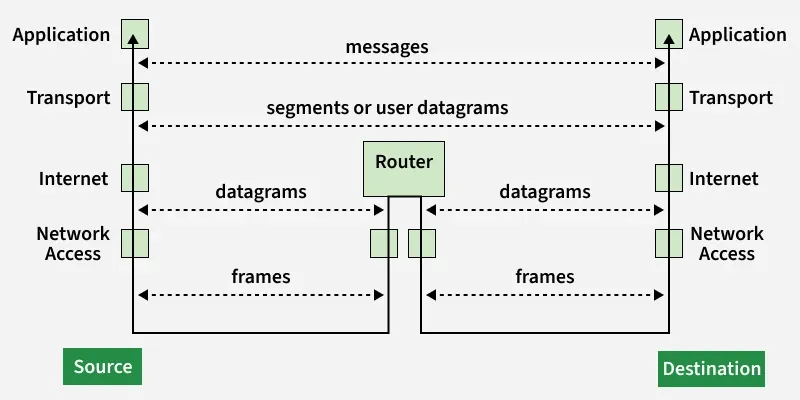
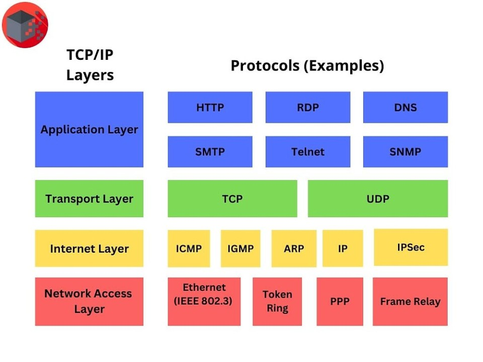

Definition of Tcp/Ip
TCP - Transmission Control Protocol - is a protocol that ensures reliable, ordered delivery of data packets by establishing a connection between the sender and receiver.
IP - Internet Protocol - is a protocol that handles the routing and addressing of data packets ensuring they get to the correct destination across networks.

The TCP/IP model is structured as shown below:
- Application layer - it acts as the interface between software applications (like browsers or email) and the underlying network. It defines protocols for data exchange like HTTP for web, SMTP for email, and FTP for file transfers, enabling network services.
- Transport Layer - it enables end-to-end communication between applications by segementing data, managing flow control, and ensuring error correction.
It uses protocols like TCP (reliable) and UDP (fast).
- Internet Layer - is responsible for logical addressing, routing and packaging data into IP datagrams to move them across networks.
- Network Layer - is responsible for the physical transmission of data across the network.
The image below relates the TCP/IP model layers to some ofthe protocols used at each level.
